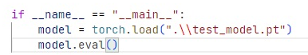
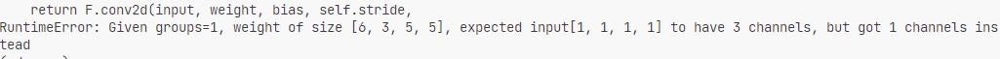

PyTorch 模型转换为 ONNX 模型初体验 - 20230603
对 PyTorch 其实是一知半解的，所以在转换模型的过程中去顺便学习知识。
首先对模型转换做个设想，将 PyTorch 模型转换成 ONNX 模型，需要经过以下几步：
1. 加载模型网络
2. 加载模型权重
3. 转换模型网络
描述模型网络
参照官方文档描述一个简单的模型网络并初始化。
class TheModelClass(nn.Module):
def __init__(self):
super(TheModelClass, self).__init__()
def forward(self, x):
x = x + 1
return x
保存与加载模型
在官方文档中，有几种保存方式，推荐的保存方法是直接使用 torch.save . 这会保存模型网络的权重（但是没有网络图），然后使用 model.load_state_dict 方法加载权重。
torch.save(model.state_dict(), PATH)
###
# （省略初始化模型）
model = TheModelClass(*args, **kwargs)
model.load_state_dict(torch.load(PATH))
当然可以直接保存整个模型，但是模型中如果有 Python 恶意代码也会被执行。
torch.save(model, PATH)
###
# （省略初始化模型）
model = torch.load(PATH)
也可以使用 save 传入一个字典保存一个检查点模型，检查点模型可以包含自己定义的其他数据，但是需要自己写加载的方法。
torch.save({
'epoch': epoch,
'model_state_dict': model.state_dict(),
'optimizer_state_dict': optimizer.state_dict(),
'loss': loss,
...
}, PATH)
这个方法还可以保存优化器参数，但转换模型用于推理不需要优化器。
还可以保存为 TorchScript 格式，不展开说。
转换为 ONNX 模型
一个含有权重模型就可以转换为 ONNX 了，转换为 ONNX 也很简单，使用 PyTorch 官方教程中的一条命令就够了（如果没有算子等奇奇怪怪的报错的话）。
torch.onnx.export(model, dummy_input, PATH)
三个必须参数：Python 模型对象，示例输入，导出路径）
使用 onnx.helper 可以输出计算图
graph torch_jit (
%onnx::Add_0[INT64, scalar]
) {
%/Constant_output_0 = Constant[value = \<Scalar Tensor []>]()
%2 = Add(%onnx::Add_0, %/Constant_output_0)
return %2
}
遇到的问题 / 知识
直接载入 pt 文件会报错
文件中不包含网络图，也就是只有模型文件也不能开始推理，这是残缺的。

没有正确理解模型网络
 发生了奇奇怪怪的报错
onnx.export() 中 input_names / output_names 的作用
导出时添加了这个参数会报错
============== Diagnostic Run torch.onnx.export version 2.0.1+cpu ==============
verbose: False, log level: Level.ERROR
======================= 0 NONE 0 NOTE 0 WARNING 0 ERROR ========================Traceback (most recent call last):
TypeError: _jit_pass_onnx_set_dynamic_input_shape(): incompatible function arguments. The following argument types are supported:
1. (arg0: torch::jit::Graph, arg1: Dict[str, Dict[int, str]], arg2: List[str]) -> NoneInvoked with: graph(%0 : Long(requires_grad=0, device=cpu)):
%12 : Long(device=cpu) = prim::Constant[value={1}](), scope: model_state_dict.TheModelClass::
%13 : Long(device=cpu) = prim::Constant[value={1}]()
%11 : Long(requires_grad=0, device=cpu) = aten::add(%0, %13, %12), scope: model_state_dict.TheModelClass:: # c:\Users\ASUS\Qsync-YzlQTSDrive\Qsync-old\Code\convert_onnx\model_state_dict.py:29:0
return (%11)
, {}, 'input1'
onnx.export() 中 verbose=True 的作用
会在 ONNX 中生成描述
加载其他模型的权重
对于加载不同模型权重，要加参数 strict=False，不然会报错
Traceback (most recent call last):
raise RuntimeError('Error(s) in loading state_dict for {}:\n\t{}'.format(
RuntimeError: Error(s) in loading state_dict for TheModelClass:
Unexpected key(s) in state_dict: "conv1.weight", "conv1.bias", "conv2.weight", "conv2.bias", "fc1.weight", "fc1.bias", "fc2.weight", "fc2.bias", "fc3.weight", "fc3.bias".
什么是 state_dict ？
在 PyTorch 中，模型的可学习参数（即权重和偏差）包含在模型的参数（使用 访问）中。
外部链接
加载：保存和加载模型 — PyTorch 教程 2.0.1+cu117 文档
转换 ONNX 模型：torch.onnx — PyTorch 2.0 文档